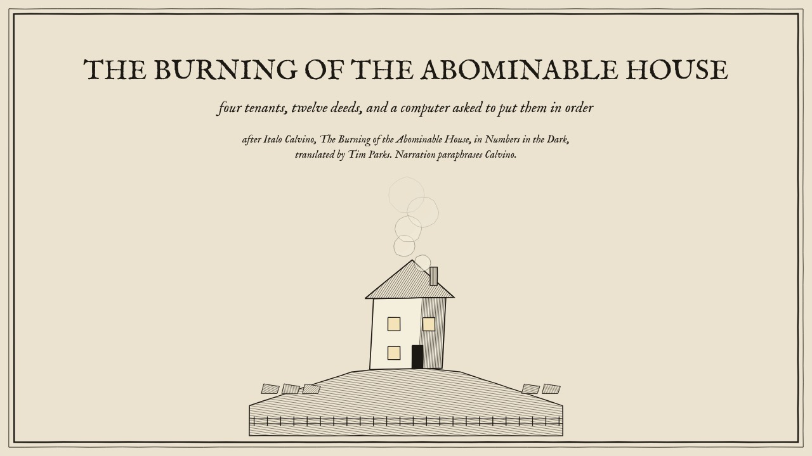

The Programmer's Room · Lab 7 Trilogy
Three narrated classroom films and computational benches tracing Waldemar from the corkboard count to entering the house to solving every deed by room, light, and witness.

Lab 7 · 27 / 32 · The Copybook
The Burning of the Abominable House
Waldemar pins the four tenants to a corkboard, counts 12^12 stories, tests the four insurance policies, and discovers the second programmer.

Lab 7 · 28 / 32 · The Observer
The House Is Occupied
A forecast prints a fire at 21:17. Skiller demands an independent observer who stays outside; Waldemar crosses the rail yard and signs as a participant.

Lab 7 · 29 / 32 · The Witness
By What Light
Knowles & Tenney's House of Dust joins Calvino: trace, room, light, and witness expand the space to 5.46×10^36 and DP-count 3.79×10^24 legal films.